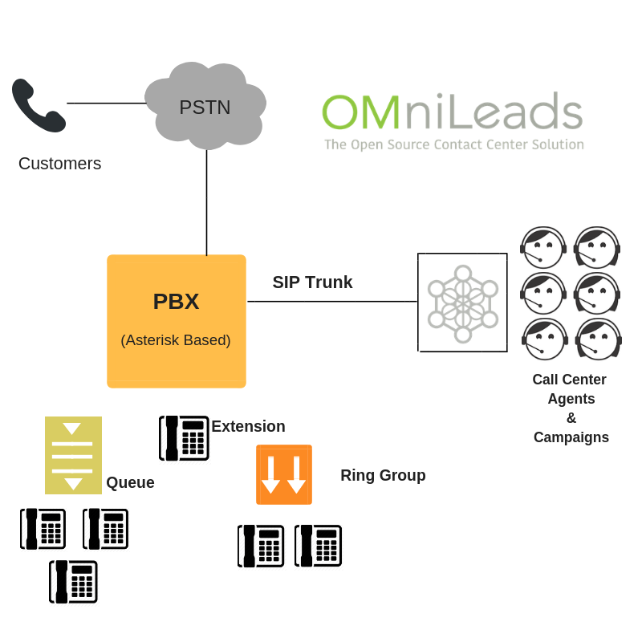

Plataforma de Contact Center integrado a un PBX basado en SIP¶
OMniLeads como una extensión del sistema de telefonía de una compañía u organización que ya dispone de un sistema PBX basado en SIP. En este escenario es la solución ideal cuando dicha compañía comienza a demandar funcionalidades de típicas del Contact Center, para medir, monitorear y gestionar un caudal comunicaciones más intensivo y con personal asignado 100% a la atención / generación de comunicaciones.
En este esquema el personal de IT de la compaía o bien el integrador de tecnologías que asesore a la compañía puede realizar una instalación de OMniLeads bare metal o en VM en unos pocos pasos, para luego configurar fácilmente la integración con el PBX.
De ésta manera se evita la compañia se evita los costos tanto económicos por adquisición de licencias de software así como también en términos de performance del PBX sacrificada para correr complejos reportes y herramientas de monitoreo, que implica la alternativa de instalar un “módulo de call center” sobre el sistema PBX.
Además a la hora de garantizar una escalabilidad OMniLeads está pensado para realizar un deploy en cluster horizontal de componentes, lo cual facilita la escalabilidad hacia cientos de agentes simultáneos.
Compañia de servicios de Customer Contact¶
En este escenario, OMniLeads puede trabajar como núcleo de comunicaciones de un Contact Center con agentes entre las decenas y centenas. El acceso a la PSTN es a través de SIP Trunks con carriers de telefonía o bien a través de SBC o GWs. En este escenario OMniLeads puede manejar múltiples troncales SIP a la vez, con su pertinente enrutamientos entrante y saliente de comunicaciones.
En estos contextos la escalabilidad es un requisito básico, ya que las operaciones son muy dinámicas y pueden demandar picos de usuarios conectados trabajando en simultánea.
Carriers ó Proveedores de Cloud PBX¶
Por últimp, este perfil de usuarios es muy viable a partir de la ventaja otorgada por WebRTC como tecnología base de OMniLeads, en este caso la performance del audio y video de los agentes es optimizada a partir de contar con Opus y VP8 como codecs de media por un lado y además por otro lado tenemos la ventaja de que WebRTC se encarga de abrstraer al administrador IT de los típicos problemas de NAT que poseen aquellar aplicaciones VoIP tradicionales SIP-RTP.
A parir del hecho de utilizar Kamailio como proxy y autenticador de agentes, la seguridad se ve incrementada y enfocada en la nube.
IMAGEN